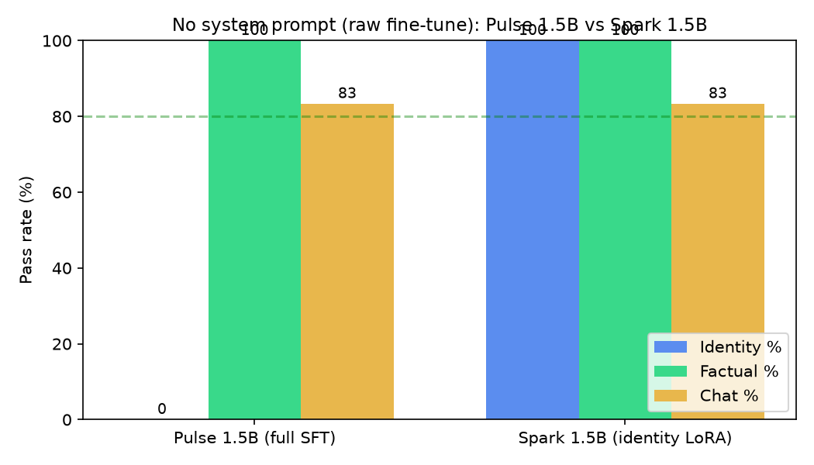

Lattice Spark
1.5B MLX LoRA fine-tune of Qwen2.5-1.5B-Instruct (rank 8, 50 iterations). The model designed so its identity survives with no system prompt at all.
Pulse vs Spark: identity in the weights, or in a system prompt?
Both are Qwen2.5-1.5B fine-tunes. Same 22 prompts, no system prompt, greedy decoding, fp16 on the same T4. Identity is the entire difference — and it's real.
8/8
Spark identity — baked into the weights
0/8
Pulse identity without a system prompt
8/8 + 5/6
factual + chat for both — knowledge identical

What this shows: Pulse says "I'm Qwen, from Alibaba Cloud" on
every identity prompt without the site's system prompt. Spark says
"I'm Lattice Spark, built by Lattice Systems" — and denies Alibaba
when asked. Same knowledge, same chat ability, different honesty.
Full writeup:
Pulse vs Spark — identity in the weights, or in a system prompt?
Spark vs base Qwen2.5-1.5B (identity + factual)
The original comparison that motivated Spark: does an identity LoRA fix who the model says it is without breaking what it knows?
0→8
identity score improvement (out of 8)
8/8
factual accuracy retained
5/6
chat/instruction following

What this shows: the base model never mentions Lattice, and
Spark never stops. The 1.5B base is big enough to absorb identity
training without forgetting knowledge.
Model: oli-mebberson/lattice-spark-1.5b
Model: oli-mebberson/lattice-spark-1.5b